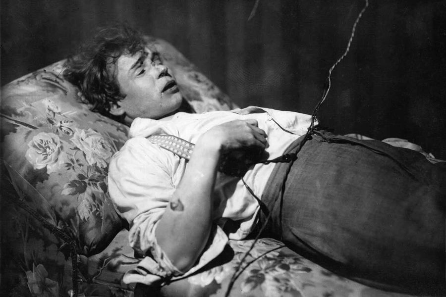

Когда умер Сергей Есенин? Сергея Есенина обнаружили мертвым в номере ленинградской гостиницы «Англетер» в 1925 году, 28 декабря. Дверь была заперта изнутри. В номере был сильный беспорядок, а мертвый поэт лежал на диване с петлей из простыни на шее. За день до этого Есенин передал свое последнее стихотворение «До свиданья, мой друг, до свиданья» другу и поэту Вольфу Эрлиху. Оно было написано кровью. Как погиб Сергей Есенин? По официальной версии, озвученной после вскрытия, он повесился. Следствие не объясняло, как повешенный переместился на диван и откуда на его теле побои и следы сопротивления.
Причина смерти Есенина — это отдельный вопрос, который остается открытым уже почти 100 лет. В 1970–1980-е годы стала популярной версия об убийстве Есенина с инсценировкой самоубийства сотрудниками ОГПУ. Лепту в ее разработку вносит отставной полковник МУР Эдуард Хлысталов, который первым обращает внимание на следы побоев на теле поэта. Правоохранители раскритиковали версию убийства, назвав ее абсурдной, но многие верят, что Есенина убили. По мотивам расследования Хлысталова о причинах смерти поэта снят сериал «Есенин». Образ поэта Сергея Есенина, как и вся его жизнь, соткан из загадок и противоречий. На многие вопросы, вероятно, так никогда и не узнаем ответов, что делает его фигуру еще более интересной. Есенин увековечен в памятниках, а бессмертные строки покоряют сердца поклонников русской лирики.